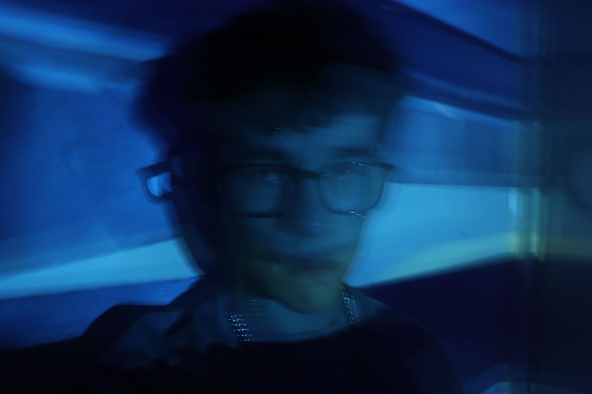
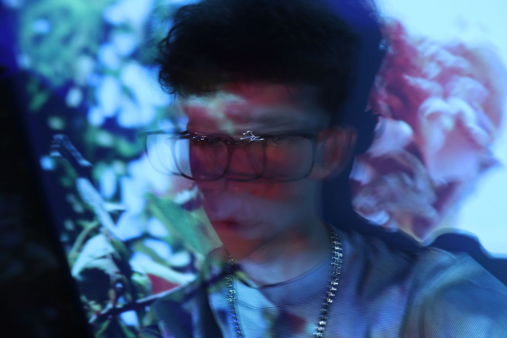

INTENTION
My intended outcome for my production experiments is to develop my stylistic traits in preparation for my final series of photographs. My first experiment will be to test how emotion can be conveyed through photography. More specifically, how colour tones, intensity of lighting, facial expression and composition combine to demonstrate meaning in a visually pleasing way. However, for this trial, I will be focusing on colour and body language.
My research and development of concepts have been inspired by the consumption of surrealist, retro photography, as displayed in the 'Media Form' and 'Style' sections, which showcase the importance of colour tone in creating meaning. The codes and conventions which are commonly found within these productions strongly appealed to me and invoked a powerful emotional response. Through these productions experiments, I aim to convey conventional methods of adjusting these elements to achieve a similar effect. Using a projector, I will test how it needs to be set up (including location, backdrop, etc...) to achieve the look I am aiming for in my final photographs. I feel as though a projector would be perfect in capturing a strong emotional responce through imagery, tone and positioning; as well as applying a surrealist aesthetic to portraiture.
SETTINGS AND EQUIPMENT:
DSLR CANON 200D2 camera
I will not require any light diffusers or light refelctors
SEIKI 720p HD compact projector
Aperture: f5.0
ISO: 800
Shutter Speed: 1/120
(These settings will be adjusted and compensated for during the shooting process to ensure that the photos are of the quality I am aiming for.)
The purpose of my experimentation is to analyse and develop my understanding of certain media codes and conventions so that they may be enhanced and utilised as intended within my final shots. (Predominantly, colour, lighting, camera, graphics and mise en scene). Through my trials, I will be manipulating colour as the dominant factor in changing emotional reception. My experimentation will link directly to my final displays and will give me a strong indication of what colours I need to use and how I should use them
INSPIRATION
https://youtu.be/xvYBAIZi9I4?si=7epFJXxbyIV2Mqw3 (Date published: 12/2/2020, Date accessed: 22/2/24)
2) What led me to this investigation was searches on Google for projected imagery photography. I wanted to explore how other media creators have explored this style of camerawork. This includes the ways in which the subject was positioned (standing, sitting, kneeling, etc.) in accordance with the lighting (what features were enhanced or covered as a result?). What meaning did this apply to the photograph? Additionally, I wanted to see what products other media creators used to achieve the aesthetic I was initially drawn towards. This included the type / size of projector, would it require a longer or shorter cord and/or other objects to attach and position it? as well as what lighting configurations were used, such as the intensity of the light, the colour of the light, how was it made to cover certain areas of the subject? was the light big, small, thin, thick or was it multiple light filters? All of these elements were considered as part of my exploration into the ways my media trails should be costrusted in order to develop new skills.
1) This video is a prominent resource of example for my production portfolio. The author, Henbu (YouTube username) demonstrates the process of taking photos, using a projector as an asset that enhanced the meaning and visual subject matter of his photographs.
This resource was accessed after my initial idea construction and was used to give a visual representation of the process I could take. This includes: Camera settings, Positioning of the projector, options regarding the focus of the projected image (Sharp or blurry), the duality between an ambient light and the projected image (Colour pairs and contrast) and overall, the way that projected imagery can create aesthetics.
INTENTION: OUTCOME
The intended outcome for my production experiments is to develop my understanding of codes and conventions and the way that they can be applied to conventional media products. Through exploration of lighting, colour, composition and camera angle, I will at the end, have established an method of achieving the stylistic look that I am satisfied with. Overall, the aim of these developments is to guide me towards my final photographs and to assist me in my construction of meaningful and intricate photos.
Through this short time frame, it is essential that I have all the resources I need to develop my productions. I have purchased a projector and am in possession of adjustable lights that can change colour and intensity. I am to experiment with coloured cellophane and a torch, to see whether it can produce a spotlighted, colour effect. One constraint I have is setting. A projector requires (for practical and visual reasons) a plain and flat wall to project against. This also helps in allowing enough room for the subject to be moved around in different ways, while also being near a powerpoint that can establish connection to the projector. In order to properly simulate the environment of my final shots, it would be preferable that I found a location that met this criteria
PROCESS
PROCESS:
I will establish a location that is suitable for my media production. The settings should preferably include a flat, plain wall that is large enough to be projected upon, enough space for the subject to sit or stand comfortably, as well as enough room to pose / extend any body parts. I must be able to adjust the brightness of the room (shutting doors, etc.) without allowing any unnecessary light to enter. Additionally, I must have access to several powerpoints to power the projector and any other lights that I might need
I will need a subject who gives consent to being photographed and is willing to dedicate an amount of time for this process
All devices and equipment to be plugged in
The projector I'm using requires a USB or HDMI input in order to display the colour tones and patterns I want. I will need to establish or create media that can be projected in order to formulate my photographs in the intended way.
The projector will be plugged in, and a USB / HDMI cable will be attached to import my images.
The camera will be set up on a tripod to ensure that the photographs are stable and that there isn't any unwanted blur
Once all elements of the frame have been set up, I will begin trials through exploration of mise en scene by taking photos with and without the ambient coloured lights (for which the colour intensity will be adjusted). In addition to this, the projected images will be changed to explore how emotion can be created through changes in colour and graphics
All exploration photographs will be transferred first on to my phone, then sent to my laptop in order to proceed with my second exploration photograph
(9.3.24)As part of my production experimentation, the settings and adjustments I made to my camera settings were crucial to achieving something that I was satisfied with.
In order to successfully take my photos, I needed to (before and throughout my shooting process):
Understand the Environment:
I needed to assess the level of darkness in the room. The darker it is, the more challenging it can be to capture quality photographs.
Additionally, I took note of the projected images' brightness and colours. This helped me to balance the exposure and colour temperature in my photographs.
Know the Positioning and Setting of My Camera:
As explored previously, the positioning of my camera was an issue that I was going to have to consider and adjust for while taking my photos. This included how I was going to hold the camera (and considering the shutter speed needed to compensate for hand shakiness)
Adjust ISO:
I started by setting a higher ISO value on my camera to increase its sensitivity to light. The higher ISO allowed me to capture brighter images in low light conditions.
My ISO settings were around 800-1600 and were adjusted as needed based on the brightness of the projected images and the desired image quality. I was cautious not to set the ISO too high in order to avoid introducing excessive noise/grain into my photos.
Adjust Aperture Settings:
I chose a wide aperture (small f-stop number) to allow more light to reach the camera sensor. This helped brighten my photos and create a shallower depth of field, which was useful for isolating myself from the background. However, I wanted to test whether having such a low aperture setting would take away from the projected images, are they essential in creating conceptual meaning, or is it dependent on the overall colour / pattern, which could be defocused?
I intended to start with an aperture of around f/2.8 or wider so that my lens could adjust as necessary based on the brightness of the projected images and the depth of field I desired.
Adjust Shutter Speed:
I set an appropriate shutter speed to balance the exposure. Since I am shooting in a darker environment, I might need a slower shutter speed to allow enough light to reach the sensor. Additionally, I found that having a slower shutter speed meant that unless I was able to keep my hand perfectly still, the photo would have motion blur. This was both a setback and a point of inspiration. After a few attempts, I found that the use of motion blur created an aesthetically rich and mysterious vibe. From here, I continued to shoot with motion blur. In the time that it took for the camera to finish capturing the image, I tilted it slightly in the hopes that it would photograph a double of the original. This was mostly successful. On the contrary, I was hoping to have the projected images in focus and clear. To adapt to this, I could try and use the tripod again, but this time it should be taller and more stable to ensure that there is no unwanted motion blur. To maintain the mysterious and unique aesthetic I found throughout my experimentation, the subjects could shift themselves slightly to achieve the same effect while having the projected image be clear.
Adjust White Balance:
I considered the colour temperature of the projected images and adjusted the white balance settings accordingly to ensure accurate colour balance. I found the white balance settings, which included options such as tungsten lighting, warm lighting, direct sunlight, and cloudy. I most commonly switched between the cloudy and tungsten lighting options (especially for photos that used a blue-tinted, projected image, as it would enhance the blue tones).
EXPERIMENTATION: SETUP
#1
Having my intention to project images on to the subject, I wanted to use my own photographs in order to streamline the process.
#2
I selected the photos that were the most aesthetically pleasing and featured the best range of visual dynamics and colour range. *
I continued to export these images to my laptop, with the intention of exporting them to a USB stick.
#3
The photos had been successfully exported to my laptop
#4
A USB adapter was needed in order to transfer the files from my laptop to the USB drive. I was not able to plug it directly into the port.
#5
This is a display of the equipment that I was intending to use for my media production experiments.
#6
The projector was positioned on my bedside table. I felt as though it was the most suitable option because it was close to the PowerPoint, on a high enough ledge to display images fully, and allowed there to be a reasonable distance between the subject and the bright light of the projector.
#7
The projector featured a menu that I needed to navigate in order to display my photos.
#8
Within the 'Photos' section, I found my USB file that contained my images
#9
transferred, then clicked on the file and found all of the photos that I had transferred to my laptop and then to my USB stick.
#10
#13
These are the ambient lights that I have in my room. I intend for them to be used throughout my production as a way to either complement or contrast the projected images.
#11
In order to complete my production experiment, I needed to set up my tripod in a way that was close enough to the subject but did not cast a shadow on to the projected image
#12
*A demonstration of how the shadows were created by the position of my camera. I was going to have to find a way around this. I either move the subject to get out of the way, adjust the height and angle of the projector, or move the camera.
A solution I found was to hold the tripod and take photos of myself as opposed to using a tripod from a distance.
PHOTOS USED*
EXPERIMENTATION / EVALUATION: PRODUCTION
PHOTOGRAPHS


EXPERIMENTATION: REVIEW
(9.3.24) Overall, I believe that I was moderately successful in my production experimentation. I had a clear vision of the products that I was aiming to produce. However, the technical and practical elements of shooting with a projector in a dark space outlined a few problems.
In terms of aesthetics, I believe my production experiments did not meet the standard I was hoping for. I found that having to use the camera from a handheld perspective created various problems that will need to be worked around for my final photographs. Some of which included: Unwanted motion blur; difficulties with composition because the projected image was sometimes on an angle and/or did not appeal visually. In addition to this, the angles from which I had to shoot were not visually striking or intricate. I had to consider what positions did not cast a shadow on me. This made it difficult to shoot with the distances and angles I wanted initially. To learn from this, I intend on using a taller, more stable tripod so that there is not any unwanted motion blur as well as so that I have more range in shot size and positioning. In terms of colour, I felt as though the use of deep blues created a very powerful series of photos. However, with proper camera techniques, its function could have been enhanced.
For my approach to the setup of my photographs, I will need to properly consider the ways in which projector size, intensity, and distance from the subject could impact the process of taking photos. I would want there to be no shadow cast from the camera, meaning that the photos will need to be taken from the side. I will continue to present these ideas and adapt them in accordance with the location of my photoshoots, if it is changed. Furthermore, I found that the ambient lighting, which could be adjusted, did not provide any additional colour duality. This is likely because of the distance that they were from the subject. In my final setup, these lights will have to be closer if I am aiming for them to make an impact.
Having done this trial, I feel as though I have a clearer idea of how my productions need to be organised. With all elements considered, my process will be heavily streamlined and considerate of any parts that need to change or that could go wrong.